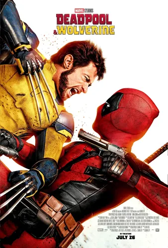

Bienvenidos al sitio oficial de Deadpool y Wolverine
Deadpool es una película de acción y comedia de superhéroes, conocida por su humor negro, violencia gráfica y la constante ruptura de la cuarta pared por parte de su protagonista.
La trama sigue a Wade Wilson, un ex operativo de las Fuerzas Especiales convertido en mercenario, que tras ser sometido a un experimento clandestino que lo deja desfigurado pero con poderes curativos acelerados, adopta el alter ego de Deadpool para cazar al hombre que arruinó su vida.

Tráiler Oficial
Mirá el avance de Deadpool & Wolverine: